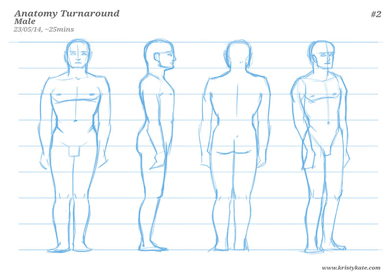
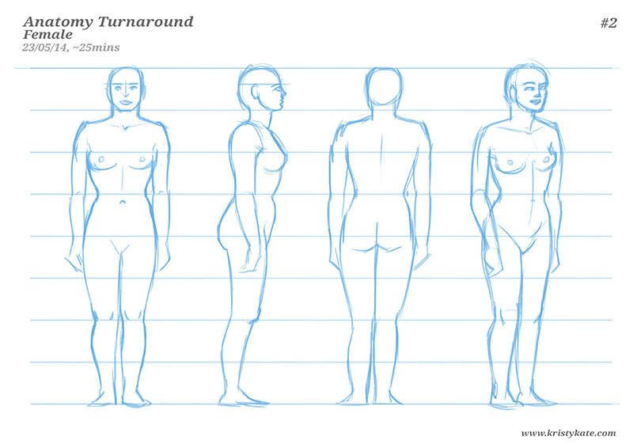

Week 9 Studies
May 19th - 25th
It's Anatomy Turnaround Sheet time!
What's the Anatomy Turnaround Sheet, you ask?
Each month I test my human anatomy knowledge by completing a male and female Anatomy Turnaround Sheet entirely from memory. From these sheets I can determine gaps in my understanding by observing the areas I struggled to draw and anatomical inaccuracies.
This is the second time I have completed the exercise and boy, am I excited! (For comparison, the first attempt can be seen in the Week 4 & 5 Studies post.)


Already there was quite a difference in my level of confidence while drawing the figure. 4 weeks ago I was really struggling to visualise the human body and spent 2hrs drawing and redrawing the figures to achieve something acceptable looking. This time around, I halved the time it took to draw the figures and reworked very little (you'll see some scratchiness with the shoulders and heads). To me, that's a fairly significant improvement!
Nevertheless, there's still much to improve on. Here's what I feel needs more work:
- Structure of the limbs (they're really not-quite-right!)
- Structure of the hands and feet
- Side-view (need more tilt in the upper torso and structure in the legs)
- Proportional widths (some areas appear too wide, such as the neck and torso)
- Form and balance (3/4 view says it all - had particular trouble with the shoulders, hip-backside-leg connection and legs)
For this upcoming month, art study will be focused on:
- Arms and legs (construction and proportion)
- Hands and feet (construction and proportion)
- More face/head studies (missed out on these last month), and
- More gesture/figure studies
Looking forward to digging into some more anatomy this month - bring on Anatomy Turnaround Sheet #3!
Until then, all the best!
x Kristy Kate
+ + +
Have any thoughts on my studies? Join me on my creative journey by leaving a comment (constructive criticism welcome) or connecting via Twitter or Facebook.